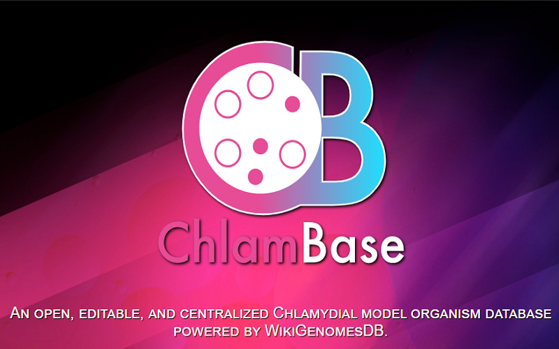
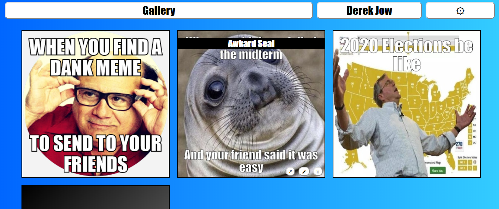
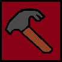
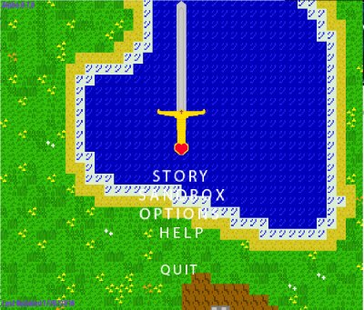
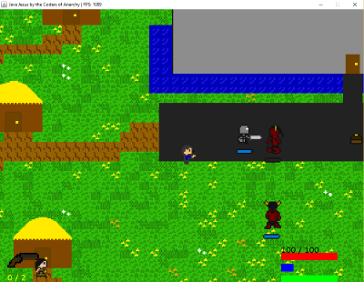

Activities and Projects
Chlambase
August 2017 - March 2019
An open, editable, and centralized Chlamydial model organism database powered by WikiGenomesDB.
Highlights of research experience:
- Implemented reciprocal best match algorithm to compute Chlamydia orthologs
- Imported manually curated gene-protein data using Wikidata bots
- Developed advanced querying and gene expression widgets displaying Chlamydial knowledge from Wikidata, NCBI, Expasy, Ensemble, and Excel
- Modularized wikigenomes.org to produce dynamically generated model organism databases, like chlambase.org and myxobase.org
Meme Master
Fall 2019
Individual class project for web client languages. Meme Master allows you to create, edit, and share memes in an online gallery that can be accessed anywhere! Project demonstrates ES6 custom modules and google firebase.
 MemeMasterGithub MemeMaster
Flashback Music Player
Winter 2018
Class project for Software Engineering class. Flashback music player allows users to download music and play music that is based on location. When each song is played, it is tagged with your current location and time of day so that you may listen to the same music you played in the same location/time of day the next time you visit as a flashback! Project demonstrates google firebase, zenhub, and android development.
Github FlashbackMusicPlayerChinese American Student Association
September 2015 - June 2018
The Chinese American Student Association (CASA) is a cultural, social, and community service oriented organization, striving to promote the Chinese American culture throughout UCSD and its surrounding community.
Hacktech
Pasadena, February 2016

Hacktech is a 36 hour programming marathon at California
Institute of Technology.
During Hacktech, I created a mobile app game called Youniversity with
a small team. It is based off many other traditional tycoon games where
you construct buildings on a scrollable 2D grid-like map. After
constructing buildings, students will come to your university and give
you money!
Github Youniversity
National Society of Collegiate Scholars
September 2015 - Present
NSCS is an honor society of undergraduate college students who have an excellent gpa.
Video Game Programming Club
September 2014 - May 2015
As one of the founding members of the video game programming club at Serra,
I managed our small group over the development of a small rpg nicknamed
JavaJesus.

I taught the members how to use Git and how to contribute to the
project. “JavaJesus” takes place in post apocalyptic San Francisco/Bay Area
and is mostly a sandbox. Although development stopped after graduation, I hope
to continue it sometime in the future!

Github JavaJesus
HP CodeWars
Palo Alto, March 2015
Code Wars is a first-class computer programming competition for high school students. It presents students with programming challenges in a high-tech setting.